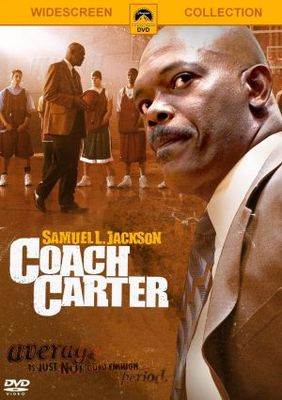

"A Ilha do Medo" (Shutter Island), dirigido por Martin Scorsese e lançado em 2010, é um thriller psicológico intenso e perturbador. Baseado no romance de Dennis Lehane, o filme apresenta uma trama repleta de mistério, tensão e reviravoltas.
O enredo se passa em 1954, quando os agentes federais Teddy Daniels (interpretado por Leonardo DiCaprio) e Chuck Aule (interpretado por Mark Ruffalo) são enviados à Ilha Shutter, uma instituição psiquiátrica de segurança máxima, para investigar o desaparecimento de uma paciente. Conforme a história se desenrola, somos levados a um labirinto complexo e angustiante de eventos, onde a verdade se torna cada vez mais elusiva.
O que torna "A Ilha do Medo" uma experiência cinematográfica envolvente é a habilidade de Scorsese em criar uma atmosfera sombria e claustrofóbica. A fotografia e a direção de arte capturam perfeitamente a sensação de isolamento e paranoia que permeiam a ilha. A trilha sonora sinistra e os enquadramentos meticulosos contribuem para uma sensação constante de suspense.
O desempenho de Leonardo DiCaprio é excepcional, como de costume. Ele retrata Teddy Daniels com uma intensidade convincente, transmitindo o conflito interno do personagem e sua luta contra seus próprios demônios. Mark Ruffalo também entrega uma atuação sólida como seu parceiro de investigação, proporcionando uma dinâmica interessante entre os dois personagens.
Um dos pontos fortes do filme é a forma como aborda questões complexas da mente humana, como a insanidade, a culpa e a perda. Scorsese brinca com a percepção do espectador, deixando-nos constantemente em dúvida sobre o que é real e o que é ilusão. A narrativa é habilmente construída, levando a reviravoltas surpreendentes e revelações impactantes.
No entanto, alguns críticos argumentam que o filme pode ser excessivamente longo e complicado, tornando-se confuso em certos momentos. Além disso, algumas pessoas podem encontrar o final polarizador, pois é aberto a interpretações diferentes.
Em resumo, "A Ilha do Medo" é um thriller psicológico arrebatador, com uma trama complexa e um ambiente perturbador. A habilidade de Martin Scorsese em criar tensão e mistério é evidente, assim como as performances impressionantes do elenco. Embora possa não ser um filme para todos os gostos, aqueles que apreciam um bom suspense psicológico certamente encontrarão muitos elementos fascinantes nessa jornada pela mente humana.

"Coach Carter" é um filme de drama esportivo lançado em 2005, dirigido por Thomas Carter e estrelado por Samuel L. Jackson. Inspirado em uma história real, o filme retrata a jornada do treinador Ken Carter, um homem determinado a fazer a diferença na vida de jovens atletas, não apenas como jogadores de basquete, mas também como cidadãos responsáveis e acadêmicos comprometidos.
A trama se passa na escola Richmond High School, em um bairro problemático. O treinador Carter assume o time de basquete e estabelece regras rígidas e um alto padrão acadêmico para seus jogadores. Ele enfatiza a importância dos estudos e exige que cada jogador mantenha boas notas para poder participar das partidas. Essa abordagem desencadeia uma série de conflitos e desafios, tanto dentro quanto fora da quadra, enquanto os jogadores lutam para conciliar suas vidas pessoais, acadêmicas e atléticas.
O que torna "Coach Carter" um filme cativante é a mensagem poderosa que transmite. Ele destaca a importância da educação, disciplina, responsabilidade e trabalho em equipe. O filme mostra como o esporte pode ser um veículo para o crescimento pessoal e a superação de adversidades. A atuação de Samuel L. Jackson no papel do treinador Carter é magnífica, transmitindo a autoridade, determinação e paixão necessárias para liderar e inspirar sua equipe.
Além disso, o filme aborda questões sociais relevantes, como o sistema educacional precário, a influência das gangues e a falta de oportunidades enfrentadas por jovens em comunidades marginalizadas. Ele nos lembra da importância de investir no potencial dos jovens e fornecer-lhes as ferramentas necessárias para alcançar o sucesso.
Embora seja um filme inspirador, alguns críticos argumentam que "Coach Carter" pode ser previsível em certos momentos e apresentar alguns estereótipos comuns em filmes desse gênero. No entanto, isso não diminui o impacto emocional que o filme proporciona e a mensagem positiva que carrega.
Em resumo, "Coach Carter" é um filme emocionante e inspirador, que destaca a importância da educação, disciplina e trabalho em equipe. Com uma atuação brilhante de Samuel L. Jackson e uma mensagem poderosa, o filme nos lembra do potencial transformador do esporte e do papel crucial dos mentores na vida dos jovens. É uma história que nos motiva a acreditar na importância de buscar nossos sonhos e superar as adversidades.
"Cães de Guerra" é um filme de 2016 dirigido por Todd Phillips. O longa-metragem retrata a história real de dois amigos que se envolvem no lucrativo e ilegal mercado de tráfico de armas.
A trama segue a jornada de David Packouz, interpretado por Miles Teller, e Efraim Diveroli, interpretado por Jonah Hill, enquanto eles aproveitam a oportunidade de fornecer armas para o governo dos Estados Unidos durante a guerra do Iraque. O filme aborda os altos e baixos dessa empreitada arriscada, incluindo a corrupção e os perigos enfrentados pelos protagonistas.
"Cães de Guerra" apresenta uma abordagem mista de drama e comédia, equilibrando momentos tensos com cenas humorísticas. A atuação de Teller e Hill é convincente, trazendo uma dinâmica interessante entre os personagens. A direção de Todd Phillips mantém um ritmo acelerado, mantendo o público envolvido na história.
Embora o filme tenha seus momentos de entretenimento, ele peca em sua superficialidade ao lidar com o tema do tráfico de armas. A falta de uma análise mais profunda do assunto deixa uma sensação de que a narrativa poderia ter explorado questões éticas e políticas de forma mais significativa.
No geral, "Cães de Guerra" é um filme cativante que fornece uma visão interessante do mundo sombrio do tráfico de armas. Embora possa não aprofundar-se completamente nas questões que levanta, ainda é uma experiência cinematográfica envolvente.